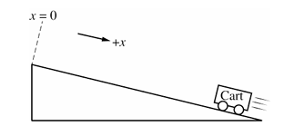
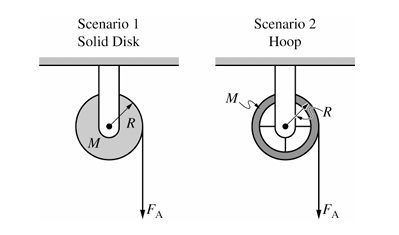

AP Physics 1 2023 Free-Response Questions
Section II
Time—1 hour and 30 minutes
5 Questions
Directions:
Questions 1, 4, and 5 are short free-response questions that require about 13 minutes each to answer and are worth 7 points each. Questions 2 and 3 are long free-response questions that require about 25 minutes each to answer and are worth 12 points each. Show your work for each part in the space provided after that part.
Question 1 (7 points)
A cart on a horizontal surface is attached to a spring. The other end of the spring is attached to a wall. The cart is initially held at rest, as shown in Figure 1. When the cart is released, the system consisting of the cart and spring oscillates between the positions x = +L and x = -L. Figure 2 shows the kinetic energy of the cart-spring system as a function of the system's potential energy. Frictional forces are negligible.
(a) On the graph of kinetic energy K versus potential energy U shown in Figure 2, the values for the x-intercept and y-intercept are the same. Briefly explain why this is true, using physics principles.
(b) When the cart is at +L and momentarily at rest, a block is dropped onto the cart, as shown in Figure 3. The block sticks to the cart, and the block-cart-spring system continues to oscillate between -L and +L. The masses of the cart and the block are m₀ and 3m₀, respectively. The frequency of oscillation before the block is dropped onto the cart is f₁. The frequency of oscillation after the block is dropped onto the cart is f₂. Calculate the numerical value of the ratio f₂/f₁.
(c) The dashed line in Figure 4 shows the kinetic energy K versus potential energy U of the block-cart-spring system after the block is dropped onto the cart. This graph is identical to the graph shown in Figure 2 for the cart-spring system before the block is dropped onto the cart.
i. Briefly explain why the two graphs must be the same, using physics principles.
ii. After the block is dropped onto the cart, consider a system that consists only of the cart and the spring. On Figure 4, sketch a solid line that shows the kinetic energy of the system that consists of the cart and the spring but not the block after the block is dropped onto the cart.
Question 2 (12 points)
Students conduct an experiment to determine the acceleration a of a cart. The cart is released from rest at the top of the ramp at time t = 0 and moves down the ramp. The x-axis is defined to be parallel to the ramp with its origin at the top, as shown in the figure. The students collect the data shown in the following table.
| Position x (m) | Time t (s) |
|---|---|
| 0.06 | 0.39 |
| 0.14 | 0.59 |
| 0.24 | 0.77 |
| 0.37 | 0.96 |
| 0.55 | 1.20 |
(a)
i. Indicate which quantities could be graphed to yield a straight line whose slope could be used to determine the acceleration a of the cart. You may use the remaining columns in the table, as needed, to record any quantities (including units) that are not already in the table.
Vertical axis: Horizontal axis:
ii. On the following grid, plot the appropriate quantities to create a graph that can be used to determine the acceleration a of the cart as it rolls down the ramp. Clearly scale and label all axes (including units), as appropriate. Draw a straight line that best represents the data.
iii. Using the line you drew in part (a)(ii), calculate an experimental value for the acceleration a of the cart as it rolls down the ramp.
(b) The students are asked to determine an experimental value for the acceleration due to gravity gexp using their data.
i. What additional quantities do the students need to measure in order to calculate gexp from a?
ii. Write an expression for the value of gexp in terms of a.
(c) The students calculate the value of gexp to be significantly lower than the accepted value of 9.8 m/s².
i. What is a physical reason, other than friction or air resistance, that could lead to a significant difference in the experimentally determined value of gexp?
ii. Briefly explain how the physical reason you identified in part (c)(i) would lead to the decrease in the experimentally determined value of gexp.
(d) The students want to confirm that the acceleration is the same whether the cart rolls up or down the ramp. The students start the cart at the bottom and give the cart a quick push so that it rolls up the ramp and momentarily comes to rest. The x-axis is still defined to be parallel to the ramp with the origin at the top.
On the following graphs, sketch the position x and velocity v as functions of time t that correspond to the scenario shown while the cart moves up the ramp.
Question 3 (12 points)
A small block of mass m₀ is attached to the end of a spring of spring constant k₀ that is attached to a rod on a horizontal table. The rod is attached to a motor so that the rod can rotate at various speeds about its axis. When the rod is not rotating, the block is at rest and the spring is at its unstretched length L, as shown. All frictional forces are negligible.
(a) At time t = t₁, the rod is spinning such that the block moves in a circular path with a constant tangential speed v₁ and the spring is stretched a distance d₁ from the spring's unstretched length, as shown in Figure 1. At time t = t₂, the rod is spinning such that the block moves in a circular path with a constant tangential speed v₂ and the spring is stretched a distance d₂ from the spring's unstretched length, where d₂ > d₁, as shown in Figure 2.
i. On the following dots, which represent the block at the locations shown in Figure 1 and Figure 2, draw the force that is exerted on the block by the spring at times t = t₁ and t = t₂. The spring force must be represented by a distinct arrow starting on, and pointing away from, the dot.
Note: Draw the relative lengths of the vectors to reflect the relative magnitudes of the forces exerted by the spring at both times.
ii. Referencing d₁ and d₂, describe your reasoning for drawing the arrows the length that you did in part (a)(i).
iii. Is the tangential speed v₁ of the block at time t = t₁ greater than, less than, or equal to the tangential speed v₂ of the block at time t = t₂?
Justify your answer without using equations.
(b) Consider a scenario where the block travels in a circular path where the spring is stretched a distance d from its unstretched length L.
i. Determine an expression for the magnitude of the net force Fnet exerted on the block. Express your answer in terms of m₀, k₀, L, d, and fundamental constants, as appropriate.
ii. Derive an equation for the tangential speed v of the block. Express your answer in terms of m₀, k₀, L, d, and fundamental constants, as appropriate.
(c) Does your equation for the tangential speed v of the block from part (b)(ii) agree with your reasoning from part (a)?
Explain your reasoning.
Question 4 (7 points)
A block of unknown mass is attached to a long, lightweight string that is wrapped several turns around a pulley mounted on a horizontal axis through its center, as shown. The pulley is a uniform solid disk of mass \(M\) and radius \(R\). The rotational inertia of the pulley is described by the equation \(I = \frac{1}{2}MR^2\). The pulley can rotate about its center with negligible friction. The string does not slip on the pulley as the block falls.
When the block is released from rest and as the block travels toward the ground, the magnitude of the tension exerted on the block by the string is \(F_T\).
(a) Determine an expression for the magnitude of the angular acceleration \(\alpha_D\) of the disk as the block travels downward. Express your answer in terms of \(M\), \(R\), \(F_T\), and physical constants as appropriate.
(b) Scenarios 1 and 2 show two different pulleys. In Scenario 1, the pulley is the same solid disk referenced in part (a). In Scenario 2, the pulley is a hoop that has the same mass \(M\) and radius \(R\) as the disk. Each pulley has a lightweight string wrapped around it several turns and is mounted on a horizontal axle, as shown. Each pulley is free to rotate about its center with negligible friction.
In both scenarios, the pulleys begin at rest. Then both strings are pulled with the same constant force \(F_A\) for the same time interval \(\Delta t\), causing the pulleys to rotate without the string slipping. After time interval \(\Delta t\), the change in angular momentum of the disk is equal to the change in angular momentum of the hoop, but the change in rotational kinetic energy for the disk is greater than that of the hoop.
In a clear, coherent paragraph-length response that may also contain equations and drawings, explain why the change in angular momentum of both pulleys is the same but the change in rotational kinetic energy is greater for the disk.